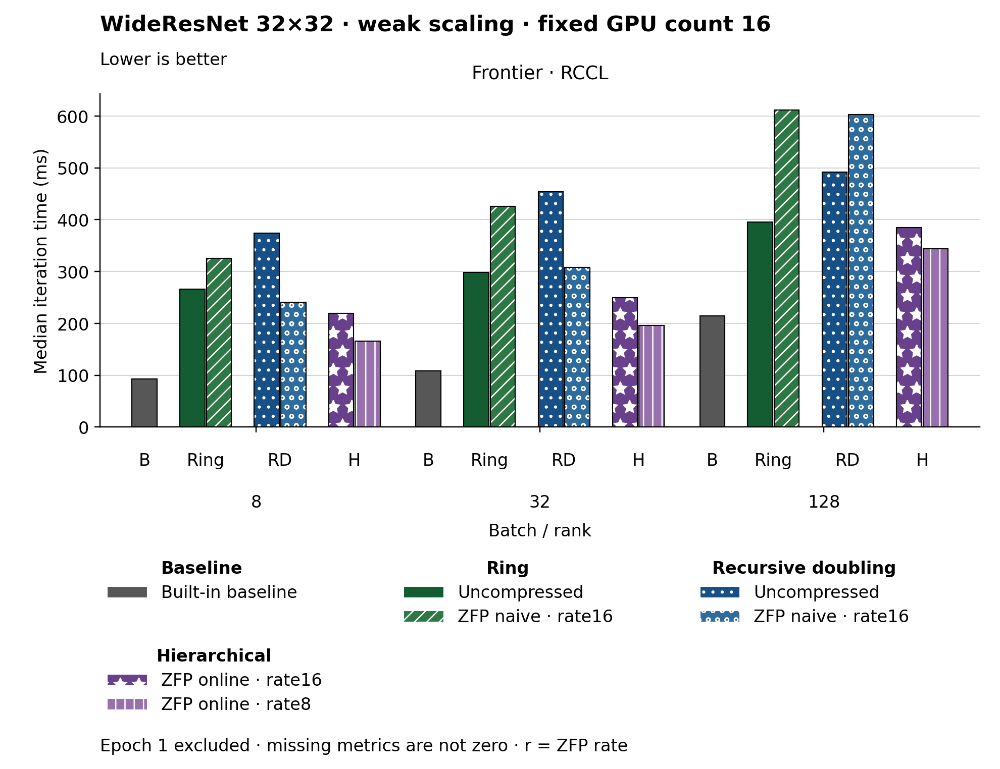

The figure uses bars. Families and methods are identified by text and patterns in addition to color. The metric is Median iteration time (ms). Frontier · RCCL, Batch / rank 8: Built-in baseline has the lowest plotted value, 92.420. Frontier · RCCL, Batch / rank 32: Built-in baseline has the lowest plotted value, 108.380. Frontier · RCCL, Batch / rank 128: Built-in baseline has the lowest plotted value, 214.310. Epoch 1 is excluded. Values are medians; when repeated runs are available the selected repeat policy is median. These are not confidence intervals across repeated jobs. Missing or unrecorded metrics are omitted, not set to zero.
| Panel | Batch / rank | Method | Value | Runs |
|---|---|---|---|---|
| Frontier · RCCL | 8 | none | 92.42 | 1 |
| Frontier · RCCL | 8 | ring | 266.14 | 1 |
| Frontier · RCCL | 8 | ring_zfp_naive:16 | 325.02 | 1 |
| Frontier · RCCL | 8 | hierarchical_zfp_online_coll:16 | 219.38 | 2 |
| Frontier · RCCL | 8 | hierarchical_zfp_online_coll:8 | 166.305 | 2 |
| Frontier · RCCL | 8 | recursive_doubling | 374.6 | 1 |
| Frontier · RCCL | 8 | recursive_doubling_zfp_naive:16 | 240.97 | 1 |
| Frontier · RCCL | 32 | none | 108.38 | 1 |
| Frontier · RCCL | 32 | ring | 297.87 | 1 |
| Frontier · RCCL | 32 | ring_zfp_naive:16 | 426.06 | 1 |
| Frontier · RCCL | 32 | hierarchical_zfp_online_coll:16 | 249.93 | 2 |
| Frontier · RCCL | 32 | hierarchical_zfp_online_coll:8 | 196.02499999999998 | 2 |
| Frontier · RCCL | 32 | recursive_doubling | 453.78 | 1 |
| Frontier · RCCL | 32 | recursive_doubling_zfp_naive:16 | 307.76 | 1 |
| Frontier · RCCL | 128 | none | 214.31 | 1 |
| Frontier · RCCL | 128 | ring | 395.41 | 1 |
| Frontier · RCCL | 128 | ring_zfp_naive:16 | 611.84 | 1 |
| Frontier · RCCL | 128 | hierarchical_zfp_online_coll:16 | 385.03499999999997 | 2 |
| Frontier · RCCL | 128 | hierarchical_zfp_online_coll:8 | 343.745 | 2 |
| Frontier · RCCL | 128 | recursive_doubling | 491.99 | 1 |
| Frontier · RCCL | 128 | recursive_doubling_zfp_naive:16 | 602.48 | 1 |